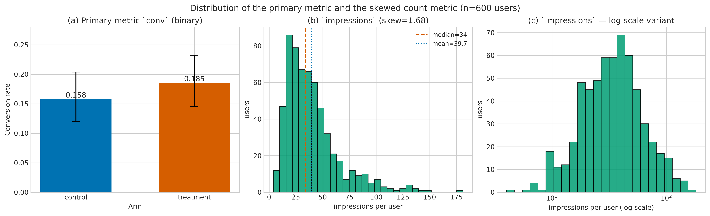
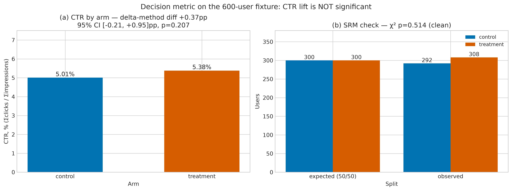
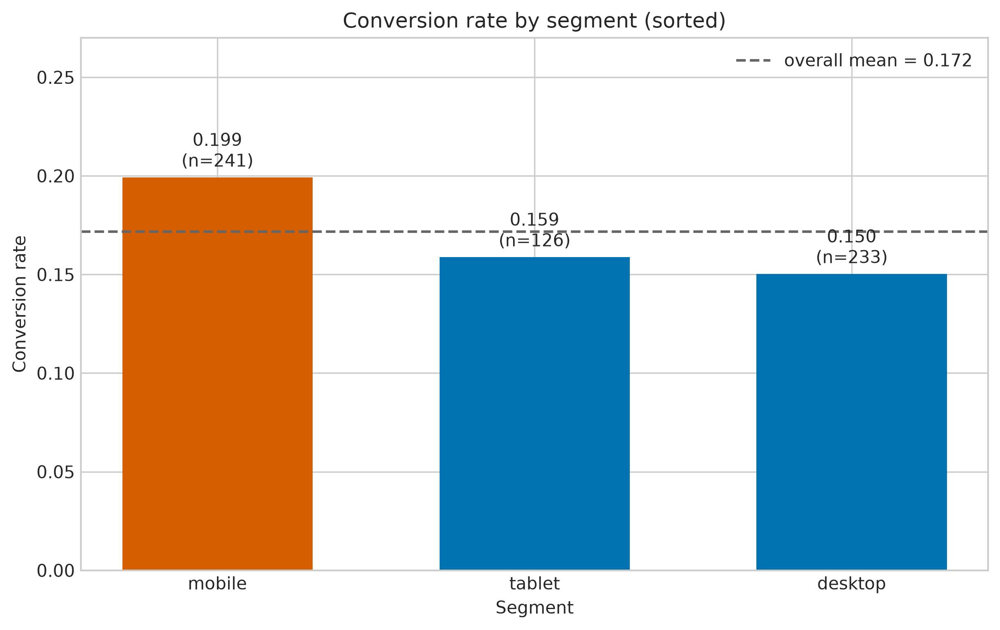
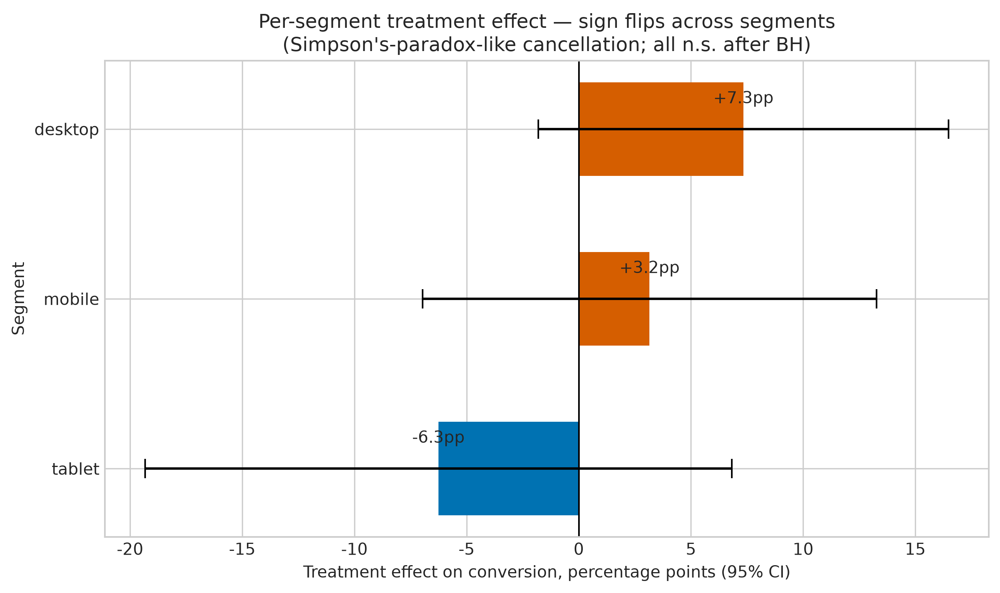
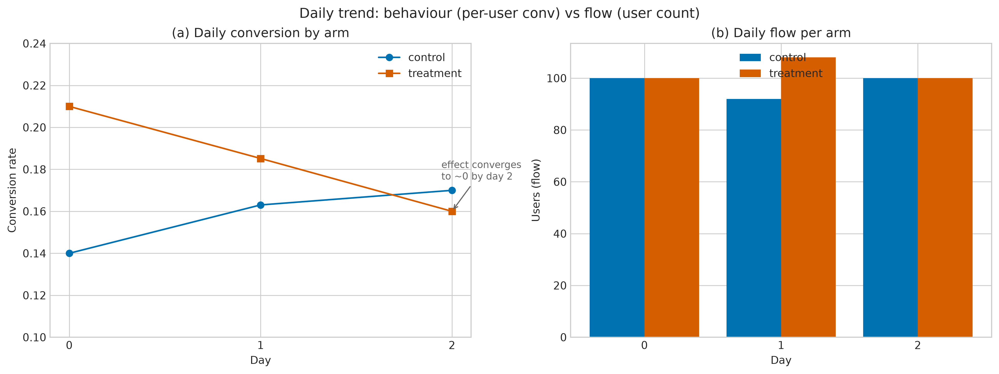

A/B-эксперимент:
что показывают 600 пользователей
EDA фикстура data/experiment_sample.csv — 600 строк × 8 колонок,
3 относительных дня, 1 строка = 1 пользователь.
Дата анализа — 2026-10-13.
Данные: что лежит в файле
8 колонок одной строкой:
day · segment · treat · conv · pre_conv · pre_sessions · impressions · clicks
Качество данных: файл чистый, но не идеальный

- 0 пропусков во всех 8 колонках.
- clicks ≤ impressions — в 100% строк.
- 3 полных дубликата (0.5%) — совпадение профилей, а не ошибка ввода.
- 5.0% IQR-выбросов в
impressions— реальные heavy-users: медиана 34 против среднего 39.7.
SRM: бакетинг чистый
Расщепление 292 / 308 неотличимо от равного — рандомизация не сломана, эффект есть смысл считать.
Главный эффект: конверсия
95% CI лифта: [−3.27, +8.78] — ноль внутри интервала.
незначимоТочечная оценка положительна, но данные не отличают её от нуля.
CTR: ratio-метрика требует delta-method

- delta-method: +0.37pp (0.0501 → 0.0538), CI [−0.21, +0.95], p = 0.207.
- Наивный per-user тест на той же метрике даёт +0.76pp — вдвое больше.
- Это известное смещение ratio-метрики, а не «более сильный эффект».
Сегменты: точечные лифты расходятся

| Сегмент | ΔCR | p_adj (BH) |
|---|---|---|
| desktop | +7.34pp | 0.347 |
| mobile | +3.15pp | 0.541 |
| tablet | −6.25pp | 0.523 |
tablet: n = 57 / 69 — самая маленькая ячейка.
Сегменты: почему из этого нельзя таргетировать
- После BH-коррекции ни один сегмент не значим (0.347 / 0.541 / 0.523).
- Состав сегментов по рукавам совпадает — это не composition-артефакт.
- Разброс от −6.25pp до +7.34pp при таких n — это шум, а не сигнал.
нельзяТаргетировать по этому файлу нельзя.

Динамика: затухание — иллюзия описательной статистики

- По дням: treat 0.210 → 0.185 → 0.160, control 0.140 → 0.163 → 0.170 — похоже на затухание.
- Но
treat×day= −4.0pp/день, CI [−11.4, +3.4], p = 0.290. - MDE при 80% мощности = 10.6pp/день.
границаЗаявлять можно только «|interaction| ≥ 10.6pp/день исключён». Ни «эффект затухает», ни «эффект стабилен» из файла не следует.
CUPED: сколько дисперсии снимает пре-метрика
CUPED снижает дисперсию оценки — он не увеличивает сам эффект. На 600 строках выигрыш скромный.
Truth-check: README описывает другой датасет
Все 6 заявленных чисел воспроизводятся — но на датасете 42 000 юзеров, а не на фикстуре 600. README привязывает таблицу к этому DGP явно (README.md:56–61): расхождение объяснимо, но числа относятся к датасету, а не к файлу в репозитории.
Бизнес-слой: три возможных решения
Выбор не между «плохо» и «хорошо», а между ценой ложного решения и ценой отсрочки.
Цена ошибки
Расчёт Type II: 100 000 юзеров/мес × 300 ₽ за конверсию × 2.75pp = 825 000 ₽/мес — это ДОПУЩЕНИЕ о цене и трафике; в файле таких колонок нет.
Сколько стоит снять неопределённость
| Лифт | N на руку | Всего | Дней при 200/день |
|---|---|---|---|
| 5.0pp | 934 | 1 868 | 9 |
| 2.75pp | 2 943 | 5 886 | 29 |
| 1.0pp | 21 364 | 42 728 | 214 |
База 15.753%, α = 0.05 двусторонний, мощность 80%, closed form
sample_size.two_proportion.
Не раскатывать и не отменять — добрать выборку.
Для лифта 2.75pp нужно ~5 900 пользователей — это ≈ 29 дней текущего потока (200/день).
Чего эти данные не говорят
- Нет
user_idи проверки дублей по ключу — совпадение профилей не доказывает чистоту. - Нет календарных дат: выходные и праздники не отделены от эффекта.
- Нет guardrail-метрик и A/A-калибровки на реальном трафике.
- CUPAC и HTE-модель не считались; байесовская инференция не запускалась.
Граница вывода: файл поддерживает решение «добрать выборку» — и ничего сверх него.